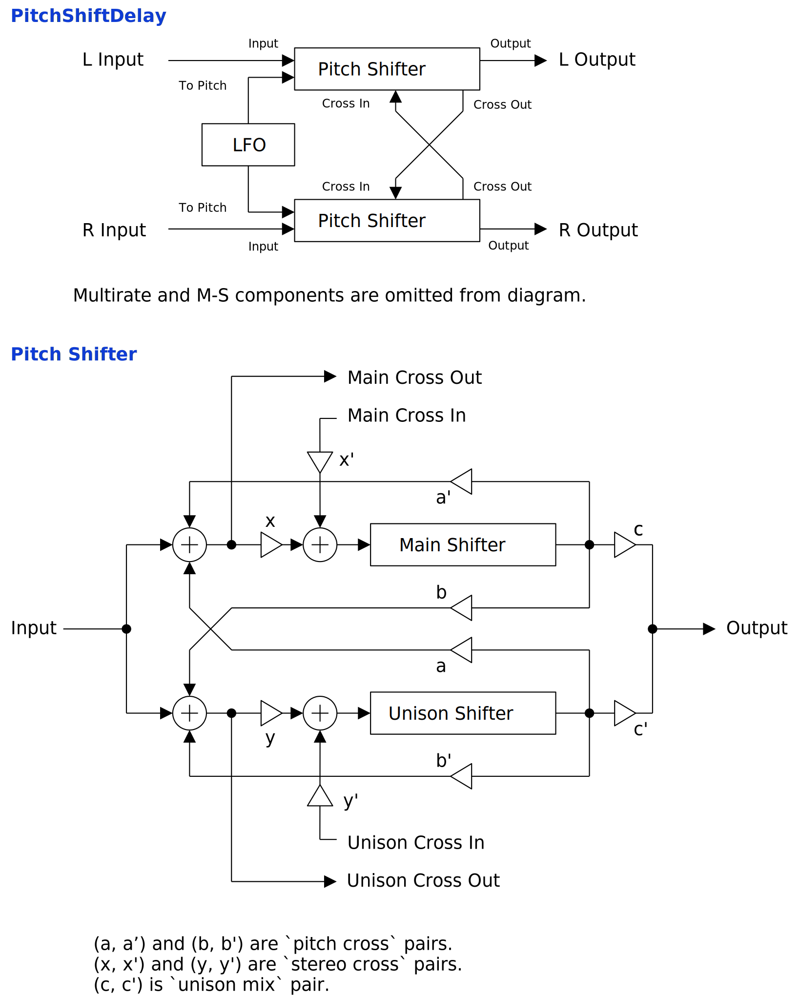

Update: 2024-09-28
PitchShiftDelay is a time domain pitch shifter based on usual delay. The quirk of pitch shifter is somewhat reduced by 16x oversampling. Also the internal buffer length can be changed in real time. PitchShiftDelay doesn’t equipped with formant correction. So applying to voice may sounds strange, like Helium is inhaled.
full - VST 3 (github.com) macOS - VST 3 (github.com)
full package contains following builds.
Linux build is built on Ubuntu 24.04. If you are using distribution other than Ubuntu 24.04, plugin will not likely to run. In this case, please take a look at build instruction.
macOS package is recommended for macOS user. I can’t
purchase Apple Developer Program, therefore installation requires a
workaround to bypass Gatekeeper. Details of workaround are written in
Installation -> macOS Specific
section.
Feel free to contact me on GitHub
repository or ryukau@gmail.com.
You can fund the development through paypal.me/ryukau.
Move *.vst3 directory to:
/Program Files/Common Files/VST3/ for Windows.$HOME/.vst3/ for Linux./Users/$USERNAME/Library/Audio/Plug-ins/VST3/ for
macOS.DAW may provides additional VST3 directory. For more information, please refer to the manual of the DAW.
Notice: Some plugins don’t have presets provided by Uhhyou Plugins.
Presets are included in the plugin package linked at the top of this page. To install presets, follow the steps below.
presets directory placed in extracted
package.Uhhyou directory into an OS specific preset
directory (see below).Below is a list of preset directories for each OS.
/Users/$USERNAME/Documents/VST3 Presets$HOME/.vst3/presets/Users/$USERNAME/Library/Audio/PresetsPreset directory name must be the same as the plugin. If preset directory does not exist, create it.
If DAW doesn’t recognize the plugin, try installing C++
redistributable (vc_redist.x64.exe). Installer can be
found in the link below.
On Ubuntu 24.04, those packages are required.
sudo apt install libxcb-cursor0 libxkbcommon-x11-0If DAW doesn’t recognize the plugin, take a look at
Package Requirements section of the link below and make
sure all the VST3 related package is installed.
REAPER on Linux may not recognize the plugin. A workaround is to
delete a file ~/.config/REAPER/reaper-vstplugins64.ini
and restart REAPER.
Important: full package is not
confirmed working. When using full, try removing
following files.
Contents/Resources/DocumentationContents/x86_64-linuxContents/x86_64-winmacOS package doesn’t contain above files. Also, all
packages are in “ad-hoc signing” state set by codesign
command.
When trying to run plugin first time, following message may appear on macOS.
<PluginName>.vst3 is damaged and can't be opened. You should move it to the Trash.In this case, open terminal and try running one or both of
following command to unzipped .vst3 directory. Replace
/path/to/PluginName.vst3 according to your install
location.
xattr -rd com.apple.quarantine /path/to/PluginName.vst3
xattr -rc /path/to/PluginName.vst3Plugin may be considered as unsigned/un-notarized application. In this case, open System Preferences, go to Security & Privacy → General, then click the Open Anyway button. The offcial Apple help page linked below has screenshots for the procedure. See “If you want to open an app that hasn’t been notarized or is from an unidentified developer” section.
If the plugin is still not working, try changing install location
to /Library/Audio/Plug-ins/VST3/ or
/Users/$USERNAME/Library/Audio/Plug-ins/VST3/ whichever
still haven’t tried.
If all the above methods do not work, try following the steps below.
sudo spctl --master-disable.Beware that steps above degrades security of your system. To revert the settings, follow the steps below.
sudo spctl --master-enable.codesignNote This section may not relevant to
macOS packages. However it’s not verified. (GitHub
issue)
To use full package, following command might be
used.
sudo codesign --force --deep -s - /path/to/PluginName.vst3codesign might not be available without installing Xcode.
At first time, create color config file to:
/Users/USERNAME/AppData/Roaming/UhhyouPlugins/style/style.json
on Windows.$XDG_CONFIG_HOME/UhhyouPlugins/style/style.json on
Linux.
$XDG_CONFIG_HOME is empty, make
$HOME/.config/UhhyouPlugins/style/style.json./Users/$USERNAME/Library/Preferences/UhhyouPlugins/style/style.json
on macOS.style.json will be loaded for each time a plugin
window opens.
Several color themes are available on the link below. To use, copy
the text to style.json.
Below is an example of style.json.
{
"fontFamily" : "Tinos" ,
"fontBold" : true ,
"fontItalic" : true ,
"foreground" : "#000000" ,
"foregroundButtonOn": "#000000" ,
"foregroundInactive": "#8a8a8a" ,
"background" : "#ffffff" ,
"boxBackground" : "#ffffff" ,
"border" : "#000000" ,
"borderCheckbox" : "#000000" ,
"borderLabel" : "#000000" ,
"unfocused" : "#dddddd" ,
"highlightMain" : "#0ba4f1" ,
"highlightAccent" : "#13c136" ,
"highlightButton" : "#fcc04f" ,
"highlightWarning" : "#fc8080" ,
"overlay" : "#00000088",
"overlayHighlight" : "#00ff0033"
}Following is a list of font options.
fontFamily: Font family name.fontBold: Enable bold style when
true, disable when false.fontItalic: Enable italic style when
true, disable when false.System font can be used as fontFamily. To use
different fonts for different plugins, place *.ttf file
into custom font path:
*.vst3/Contents/Resources/Fonts.
Notice: If the combination of
fontFamily, fontBold,
fontItalic does not exist in custom font path, default
font of VSTGUI is used.
If fontFamily is set to empty string "",
then "Tinos"
is used as fallback. If the length is greater than 1 and the font
family name doesn’t exist, default font of VSTGUI is used.
Styles other than bold, italic or bold-italic are not supported by VSTGUI. For example, “Thin”, “Light”, “Medium”, and “Black” weights cannot be used.
Hex color codes are used.
First letter # is conventional. Plugins ignore the
first letter of color code, thus ?102938,
\n11335577 are valid.
Do not use characters outside of 0-9a-f for color
value.
Following is a list of color options. If an option is missing, default color will be used.
foreground: Text color.foregroundButtonOn: Text color of active toggle
button. Recommend to use the same value of foreground or
boxBackground.foregroundInactive: Text color of inactive
components. Currently, only used for TabView.background: Background color.boxBackground: Background color of inside of box
shaped components (Barbox, Button, Checkbox, OptionMenu, TextKnob,
VSlider).border: Border color of box shaped components.borderCheckbox: Border color of CheckBox.borderLabel: Line color of parameter section
label.unfocused: Color to fill unfocused components.
Currently, only used for knobs.highlightMain: Color to indicate focus is on a
component. Highlight colors are also used for value of slider
components (BarBox and VSlider).highlightAccent: Same as highlightMain.
Used for cosmetics.highlightButton: Color to indicate focus is on a
button.highlightWarning: Same as highlightMain,
but only used for parameters which requires extra caution.overlay: Overlay color. Used to overlay texts and
indicators.overlayHighlight: Overlay color to highlight current
focus.Right Click on the controls pops up a context menu provided by DAW.
Knob and slider provides following controls:
dB) parameters,
floor is applied after the value is converted to amplitude.Control with many blue vertical bars (BarBox) have some keyboard shortcuts. Shortcuts are enabled after left clicking BarBox and mouse cursor is on the inside of BarBox.
| Input | Control |
|---|---|
| Left Drag | Change Value |
| Shift + Left Drag | Change Value (Snapped) |
| Ctrl + Left Drag | Reset to Default |
| Ctrl + Shift + Left Drag | Change Value (Skip Between Frames) |
| Middle Drag | Draw Line |
| Shift + Middle Drag | Edit One Bar |
| Ctrl + Middle Drag | Reset to Default |
| Ctrl + Shift + Middle Drag | Toggle Lock |
| a | Alternate Sign |
| d | Reset Everything to Default |
| D | Toggle Min/Mid/Max |
| e | Emphasize Low |
| E | Emphasize High |
| f | Low-pass Filter |
| F | High-pass Filter |
| i | Invert Value (Preserve minimum) |
| I | Invert Value (Minimum to 0) |
| l | Toggle Lock under Mouse Cursor |
| L | Toggle Lock for All |
| n | Normalize (Preserve minimum) |
| N | Normalize (Minimum to 0) |
| p | Permute |
| r | Randomize |
| R | Sparse Randomize |
| s | Sort Descending Order |
| S | Sort Ascending Order |
| t | Subtle Randomize (Random walk) |
| T | Subtle Randomize (Converge to 0) |
| z | Undo |
| Z | Redo |
| , (Comma) | Rotate Back |
| . (Period) | Rotate Forward |
| 1 | Decrease |
| 2-4 | Decrease 2n-4n |
| 5-9 | Decimate by holding 2n-5n |
Snapping is not available for all BarBox. If you’d like to have snapping for certain BarBox, feel free to open issue to GitHub repository.
Edit One Bar with Shift + Right Drag holds a bar under the cursor when mouse right button is pressed. Then only changes that one bar while holding down mouse right button.
Toggle Lock with Ctrl + Shift + Right Drag behaves as line edit. When right mouse button (RMB) is pressed, it holds the opposite state of the bar below mouse cursor, then use the state for the rest of bars. For example, if RMB is pressed on a locked bar, dragging unlocks bars while holding down RMB.
Some BarBox has scroll bar to zoom in. Scroll bar has handles on left end and right end. To control zoom, use Left Drag on one of the handle. Scroll bar also has following controls:
If the image is small, use Ctrl + Mouse Wheel or “View Image” on right click menu to scale.
Diagram only shows overview. It’s not exact implementation.

Main pitch shift amount.
Main shifter multiplies pitch by the value of Pitch +
LFO amount.
Because of the 16 fold oversampling, aliasing noise don’t affect
the output when Pitch is below 31 which is
equal to 16 * 2 - 1.
Unison shifter pitch offset from Pitch.
Unison shifter pitch is calculated by following equation:
unisonPitch = mainPitch;
if (Mirror) unisonPitch = max(1 / unisonPitch, 1000);
if (S2 Reverse) unisonPitch = -unisonPitch;
unisonPitch += ((To Pitch) + (To Unison)) * lfo;Cross feedback amount between main shifter and unison shifter.
When checked, it changes unison shifter pitch to
1 / Pitch.
Checking Mirror after initial state results in that
the feedback pitch will always be Pitch or
1 / Pitch. This state will be kept until one of
Offset, Pitch Cross, To Pitch,
or To Unison is changed from default.
Reverse the playback of main shifter.
Internally, S1 Reverse changes the sign of
Pitch to negative to moving the read pointer to reverse
direction.
Reverse the playback of unison shifter.
The ratio of Delay Time between left and right
channels. L-R Lean also works when
Channel Type is M-S.
Buffer length of pitch shifter. Note that the value only accurate
when Pitch is set to 1.
The exact delay time depends on the pitch shift amount and buffer
length. LFO farther complicates the computation of exact delay time.
So the value of Delay Time is usually a rough indication
rather than exact delay time.
Feedback gain in amplitude.
Cross feedback amount between stereo channels. When the value is
set to 1.0, output becomes ping-pong delay.
Select input channel type from left-right (L-R) or
mid-side (M-S).
Cutoff frequency of highpass filter inserted on feedback path.
Input bypass gain.
Output gain of the signal that go through PitchShiftDelay.
Mixing ratio of main shifter and unison shifter.
Paramter smoothing time in seconds.
For example, if the value of Smoothing is set to
0.01 or something short, the change of parameter almost
immediately applies. So it sounds more snappy, but may introduce
audible pop noise.
On the other hand, if thevalue of
Smoothing is set to1.0for example, the change of parameter is only slowly followed. So when changingPitch`,
it may sounds like long slide/portamento.
When checked, it enables tempo synchronization (tempo sync). LFO phase also synchronize to the exact position derived from sync interval, and time passed from the start of playback.
When not checked, LFO behaves as same as if synchronizing to 120 BPM. It also disables LFO phase sync.
Numerator of sync interval.
LFO synchronizes to 1 bar when
(Tempo Upper) / (Tempo Lower) is 1/1.
1/4 synchronizes to 1 beat when time signature of
4/4. Note that Rate multiplies the sync
interval.
Following is the equation to calculate sync interval.
syncInterval = (Rate) * (Tempo Upper) / (Tempo Lower);Denominator of sync interval.
Note that Rate multiplies the sync interval.
Multiplier to sync interval.
Rate is convenient when changing sync interval while
keeping the values of Tempo Upper and
Tempo Lower.
LFO phase offset between stereo channels.
LFO phase offset between main shifter and unison shifter.
LFO wave form interpolation method.
Step: Holding.Linear: Linear interpolation.PCHIP: Monotonic cubic interpolation.Step makes LFO to act like a sequencer.
Linear sounds similar to PCHIP, and the
computation cost is lower. PCHIP is the most smooth among
all 3.
LFO modulation amount to main pitch.
LFO modulation amount to unison shifter pitch that is added to
To Pitch amount.
style.json crashes
plugin.foregroundInactive.processContext is
nullptr.virtual to destructor of common components.
This may prevent some cause of crash or memory leak.PitchShiftDelay is licensed under GPLv3. Complete licenses are linked below.
If the link above doesn’t work, please send email to
ryukau@gmail.com.
VST is a trademark of Steinberg Media Technologies GmbH, registered in Europe and other countries.